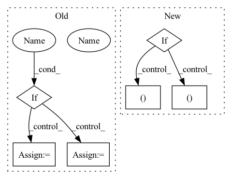

Pattern ID :37
Before Change
self.conv2 = nn.Conv2d(32, 64, kernel_size=4, stride=2)
self.conv3 = nn.Conv2d(64, 64, kernel_size=3, stride=1)
if use_batch_norm :
self.bn1 = nn.BatchNorm2d(32)
self.bn2 = nn.BatchNorm2d(64)
self.bn3 = nn.BatchNorm2d(64)
self.bn4 = nn.BatchNorm1d(512)
self.fc = nn.Linear(self._get_linear_input_size(), 512)After Change
super().__init__()
// default architecture is based on Nature DQN paper.
if filters is None:
filters = [(32, 8, 4 ), (64, 4, 2 ), (64, 3, 1)]
if feature_size is None:
feature_size = 512
In pattern: SUPERPATTERN
Frequency: 3
Non-data size: 6
Instances Fragment ID: 222531
Project Name: takuseno/d3rlpy
Commit Name: 557b11a8d5cf75edfc0a2928399d5192d1757ddb
Time: 2020-06-16
Author: takuma.seno@gmail.com
File Name: skbrl/models/torch/heads.py
M Class Name: PixelHead
N Class Name: PixelHead
M Method Name: __init__(5)
N Method Name: __init__(3)
M Parent Class: nn.Module
N Parent Class: nn.Module
M File Name: skbrl/models/torch/heads.py
N File Name: skbrl/models/torch/heads.py
M Start Line: 11
M End Line: 22
N Start Line: 8
N End Line: 43
Fragment ID: 222545
Project Name: lucidrains/reformer-pytorch
Commit Name: fbae34221f4e2c2d777551a5e92b8bba5ae2385c
Time: 2020-06-06
Author: lucidrains@gmail.com
File Name: reformer_pytorch/reformer_pytorch.py
M Class Name: Reformer
N Class Name: Reformer
M Method Name: __init__(32)
N Method Name: __init__(30)
M Parent Class: nn.Module
N Parent Class: nn.Module
M File Name: reformer_pytorch/reformer_pytorch.py
N File Name: reformer_pytorch/reformer_pytorch.py
M Start Line: 757
M End Line: 772
N Start Line: 751
N End Line: 789
Fragment ID: 222551
Project Name: lucidrains/sinkhorn-transformer
Commit Name: c2662a20cb783efd3351936cfabc83131060a2a6
Time: 2020-04-10
Author: lucidrains@gmail.com
File Name: sinkhorn_transformer/sinkhorn_transformer.py
M Class Name: SinkhornTransformer
N Class Name: SinkhornTransformer
M Method Name: __init__(20)
N Method Name: __init__(19)
M Parent Class: nn.Module
N Parent Class: nn.Module
M File Name: sinkhorn_transformer/sinkhorn_transformer.py
N File Name: sinkhorn_transformer/sinkhorn_transformer.py
M Start Line: 547
M End Line: 554
N Start Line: 546
N End Line: 576